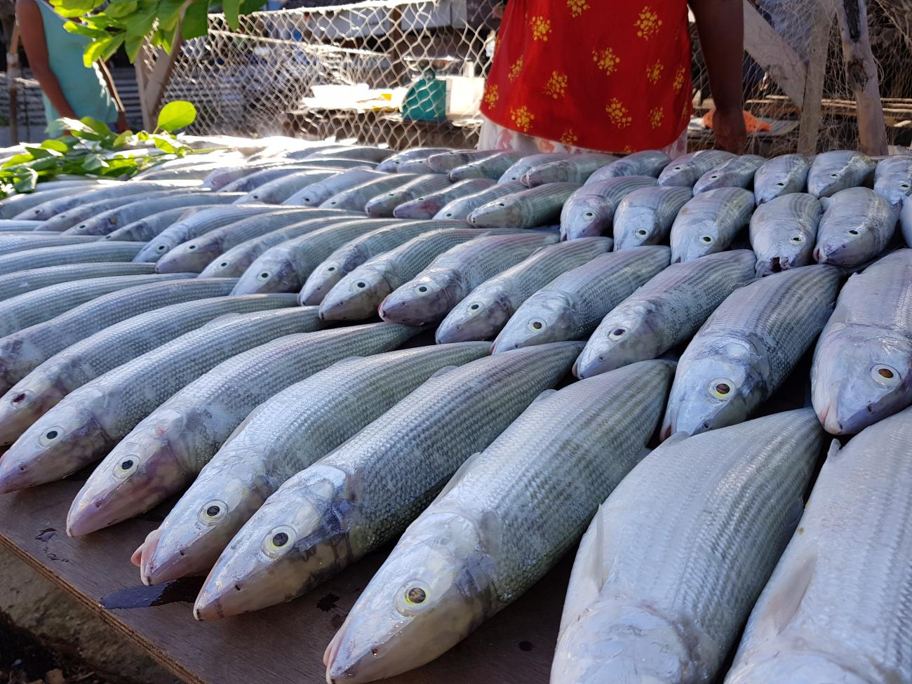

WELCOME TO THE CENTRAL ISLAND
MAURI FROM KIRIBATI

Central Island is a place where found in the middle of Kiribati. I chose this place because it unique from other islands of Kiribati. This island is unique because it place in the middle of the 23 islands of Kiribati. Fishing in this area is easier and everyone on this island can't miss eating fish. The other thing that unique is a traditional cultures. All Kiribati cultures are maintained on this island and still practice.

Maneaba is a place for elders man in the village to meet and discuss things about the village. There are lots of activities that can happen in this building. All activities will be controlled under the elders leadership. No woman can talk inside the maneaba while the meeting is on. Te maneaba is one of the most important building besides the meeting house in Kiribati.

The above picture is a traditional food in Kiribati. During culture days activity in different schools, students used to prepare this food for the celebration. They put it inside a weave basket from coconut leaves. It can be fruits, fish, coconut, and so forth. This traditional food are taken and found on the island. Every thing is fresh and that why they are called traditional food.
I chose the above picture because fish is one of the main dish in Kiribati. Kiribati is rich different kind of fish because of the big ocean they have. Each day, people used to go fishing for their family meal. As for those who work, they used to buy fish from different fish market that they close too. This picture was a fish market that's own by a family that used to fish everyday.